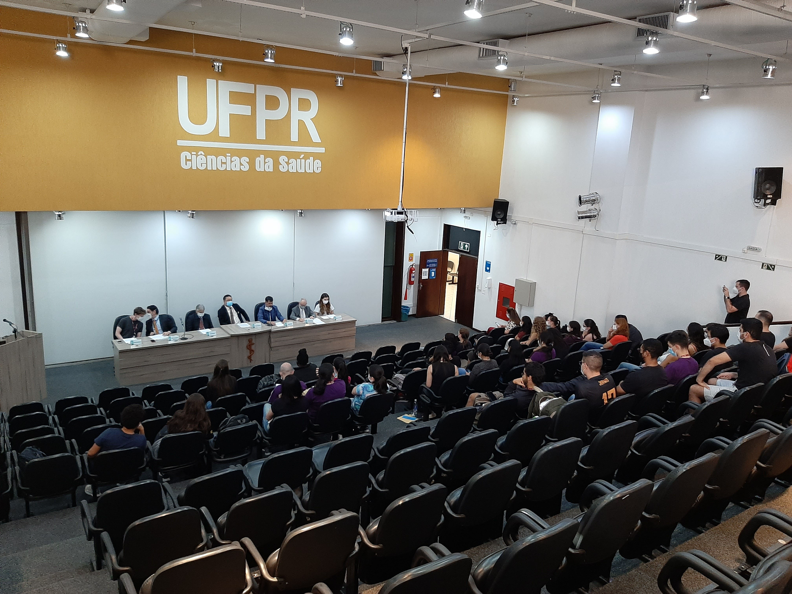

2022 - Abril

Júri Simulado
Organizei um Júri Simulado com o CRM-PR, como parte de um projeto de extensão de Bioética e Ética Médica.
Uma linha do tempo com momentos marcantes da minha jornada pessoal e acadêmica.
Organizei um Júri Simulado com o CRM-PR, como parte de um projeto de extensão de Bioética e Ética Médica.

No mês de Março nossas aulas começaram a voltar presencialmente. Foi quando pude encontrar meus amigos novamente.

No mês de Setembro, ingressei em minha primeira iniciação científica, parte do Projeto Mennogen, da professora Drª Angelica Winter Boldt. Era sobre a relação entre a COVID-19 e a vacinação da população menonita.
Após as aulas ficarem suspensas durante o auge da pandemia, as aulas retornam no formato online pela UFPR.
Em Fevereiro começaram oficialmente as minhas aulas no Centro Politécnico da UFPR
Aos 17 anos, fui aprovado em Medicina na universidade mais antiga do país, a Universidade Federal do Paraná!